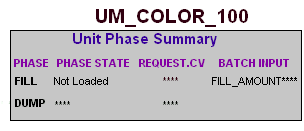

Testing UM_COLOR_100 using the Batch graphic
Now you are ready to test the FILL unit phase for UM_COLOR_100. You will start by launching DeltaV Operate in run mode and opening the graphic named Batch, which shows the unit modules you will create for this tutorial. This is not a graphic that you would normally create for an application. We have provided it as a testing tool.
Each box on this graphic represents a unit module with its list of assigned phases. Each box also has data links for request and batch input parameters.
For example, the box representing the UM_COLOR_100 unit module looks like this:

One reason for having the Batch graphic is that it has been set up with data links that allow us to open unit module faceplates and directly manipulate the phases. To open the faceplate for a unit module, click the unit module name. A phase faceplate can then be opened from the unit module faceplate by loading the phase and clicking the Faceplate button beside the phase name. At this point in our configuration effort, the Batch graphic provides this direct access to the unit modules and unit phases and is therefore a useful tool for testing and troubleshooting.
After you open the Batch graphic, you will open the faceplate for the UM_COLOR_100 unit module, load the FILL phase, open its faceplate, and then go to the Process graphic to watch what happens when you manipulate the phase states. When you start the FILL phase, the valve state changes to OPEN, and the tank begins to fill, as shown by the fill level. (A Total Flow value appears above the tank.) Then, you will change the FILL_AMOUNT parameter. When the tank fill level is reached, the phase goes to COMPLETE. At that point, you will reset the phase and unload it.